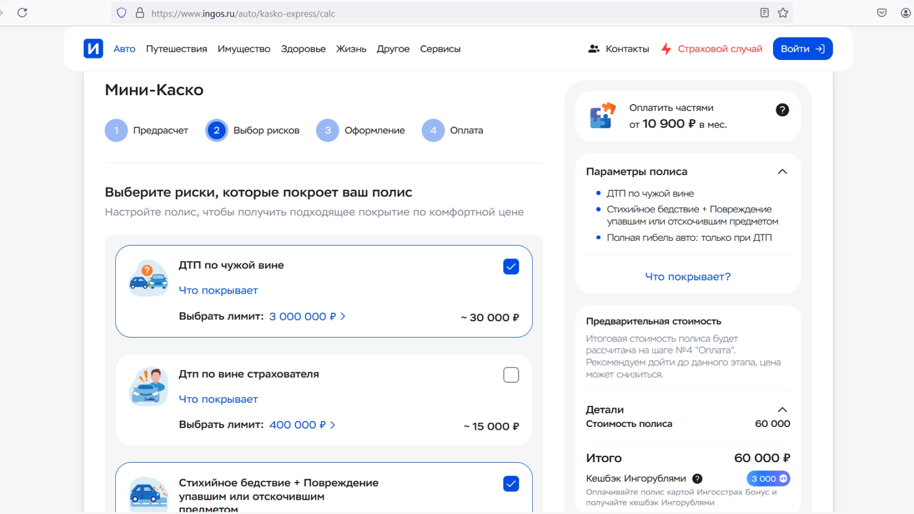
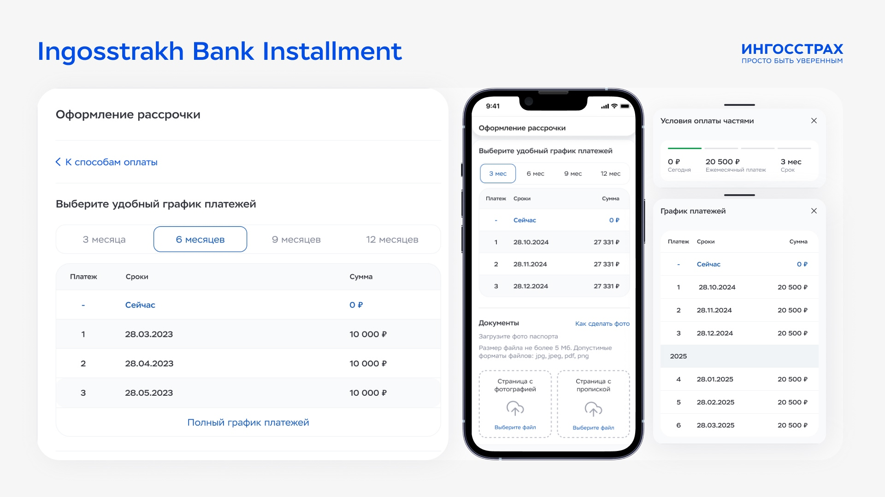

BNPL Experience — Increasing Conversion in High-Stakes Fintech
Role & Timeline
Product Designer (End-to-End)
Ingosstrakh, 2022–2024
My Focus
UX strategy, flow architecture, UI design, and logic definition for the BNPL integration.
The Challenge
Mitigating user drop-off at the payment stage by shifting perception from "expensive commitment" to "manageable decision".
🏆 Business Impact & Validation
Validated after 2-week A/B test on live traffic (50k+ sessions)
-
•
+18% uplift in overall checkout conversion.
-
•
-25% reduction in drop-off rates at the final payment step.
-
•
+30% improvement in user comprehension of financial terms (proven via usability testing).
Context & Problem Space
Insurance is inherently a high-friction product: users make decisions under uncertainty, dealing with financial risk and low trust. We observed a >40% drop-off at the payment stage due to high upfront costs and unclear terms.
Core Friction Points
- — No clear mental model for installment plans.
- — Lack of transparency in the payment breakdown.
- — Fear of hidden conditions and predatory fees.
Product Constraints
- — Strict financial and legal regulations.
- — Rigid backend limitations for credit approval logic.
- — Managing multiple edge cases (declines, partial approvals).
User Flow Architecture
Key Screens & Solutions
1. The Installment Selector
Designed predefined plans with a clear monthly vs. total cost comparison. By pre-calculating plans, we significantly reduced decision fatigue and aligned the UI with how people actually think about their personal budgets (monthly, not total).

Fig 1. Installment selector interface for 3-12 months
2. Transparent Payment Breakdown
Created a transparent structure of upcoming payments with no hidden fees. Inline explanations of terms and robust edge-case handling helped reduce perceived risk just before the final confirmation step.

Fig 2. Transparent payment breakdown interface
The Solution Framework
-
✓
Pre-calculated plans — significantly reduces decision fatigue and cognitive load.
-
✓
Monthly-first communication — shifts perception by aligning with users' mental models of personal budgeting.
-
✓
Inline explanation of terms — provides radical transparency directly at the point of decision.
-
✓
Robust edge-case handling — smooth UX recovery for bank declines or partial approvals.
Why This Works (Design Logic)
Zero Math
Removes the need for user calculations by offering pre-packaged financial logic.
Mental Models
Aligns communication with how people budget their money (monthly framing).
Radical Clarity
Reduces perceived risk through total transparency of fees and schedules.
Low Load
Minimizes cognitive load at each step. The difference wasn't visual — it was how info is structured.
Reflection: Insights & Fintech Strategy
"Users don't just evaluate the UI — they evaluate risk. Great fintech design isn't just about removing friction; it's about reducing uncertainty."
In this project, I designed a financial product that balances velocity, absolute transparency, and strict real-world constraints. My primary focus was to make complex backend systems feel simple and secure for the end-user without compromising financial accuracy.
I believe that in fintech, trust is the ultimate form of UX. This project demonstrates how a deep understanding of product logic allows for the creation of interfaces that empower users to stay in control of their finances, transforming complex calculations into informed and confident decisions.